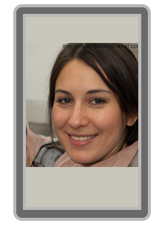

Alystère Célèste-de-la-Rivière naît le 26 Novembre 2019 à Dunkerque en France. Son père Griff Célèste est le fondateur du
Conseil de la Vérité
et sa mère Valérie De la Rivière fait partie des Activistes Anti-Algues. Elle passe son enfance éloignée de sa mère à cause de différents conflits avec son père.
Alystère étudie à l'Université Moustache à Angers pour devenir ingénieure, obtenant son diplôme au terme de son cursus en 2041.
Avant d'intégrer GlideWheels, Alystère enchaîne plusieurs stages et missions courtes dans des structures de l'industrie technologique et automobile.
Lors de sa dernière année d'études, Alystère réalise un stage de six mois au sein des équipes d'ingénierie de SkyMotors Company. Elle travaille principalement sur les systèmes de diagnostic embarqué des modèles de la gamme "Office", sous la supervision de techniciens de Raphaël Hidier. Son passage y est jugé satisfaisant, sans être marquant. Elle n'obtient pas de proposition d'embauche à l'issue de ce stage, officiellement pour cause de gel des recrutements juniors cette année-là.
Peu après l'obtention de son diplôme, Alystère est recrutée en mission courte par le Jaque & Jaune Travel Group pour un projet de maintenance préventive sur les systèmes électroniques de la flotte Europa Falcon. C'est au cours de cette mission qu'elle fait la connaissance de membres de l'entourage de Jaque Boulon, amorçant les liens discrets qu'elle entretiendra plus tard avec la famille Babou.
Alystère rejoint
GlideWheels
en 2042, plusieurs mois après la fondation officielle de l'entreprise. Elle intègre l'équipe d'ingénierie des systèmes de propulsion comme ingénieure junior, contribuant au développement des modèles de la gamme "HyperWheels".
En Juillet 2045,
GlideWheels
est liquidée à la suite d'une série d'explosions inexpliquées. Alystère se retrouve sans emploi du jour au lendemain.
Alystère vit actuellement dans la région de Besançon en France. Elle entretient des relations étroites avec la famille Babou, dont l'origine remonte à sa mission chez Jaque & Jaune Travel Group.
| Période | Structure | Rôle |
|---|---|---|
| 2040 (6 mois) | SkyMotors Company | Stagiaire — Systèmes de diagnostic embarqué. |
| 2041 | Jaque & Jaune Travel Group | Mission courte — Maintenance électronique flotte Europa Falcon. |
| 2042 - 2045 | GlideWheels | Ingénieure junior — Systèmes de propulsion HyperWheels. |
| 2045 - Présent | Sans emploi officiel | Résidence à Besançon. |
Alystère est accusée d'avoir saboté les voitures GlideWheels en raison de sa liaison avec la famille Babou. Ces accusations, formulées par Siola Duarrab au moment de la liquidation, ont été jugées infondées par les autorités compétentes. Alystère Célèste-de-la-Rivière a été relâchée sans poursuites.